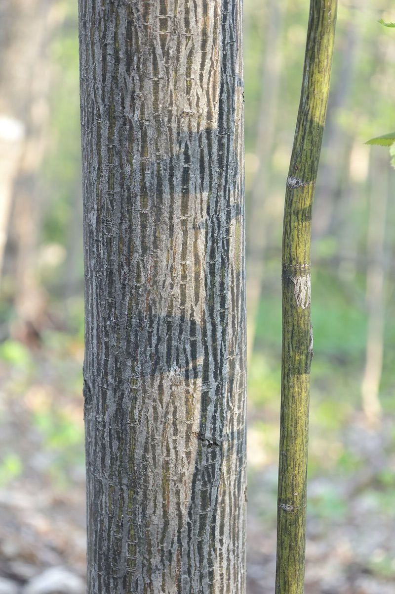
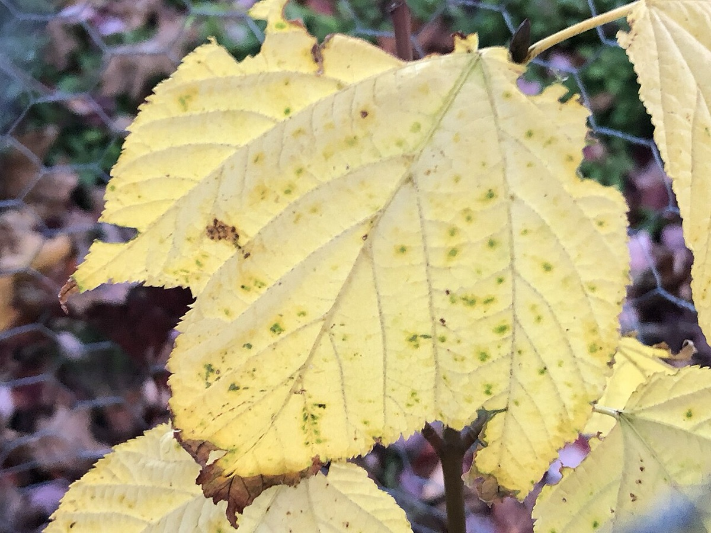
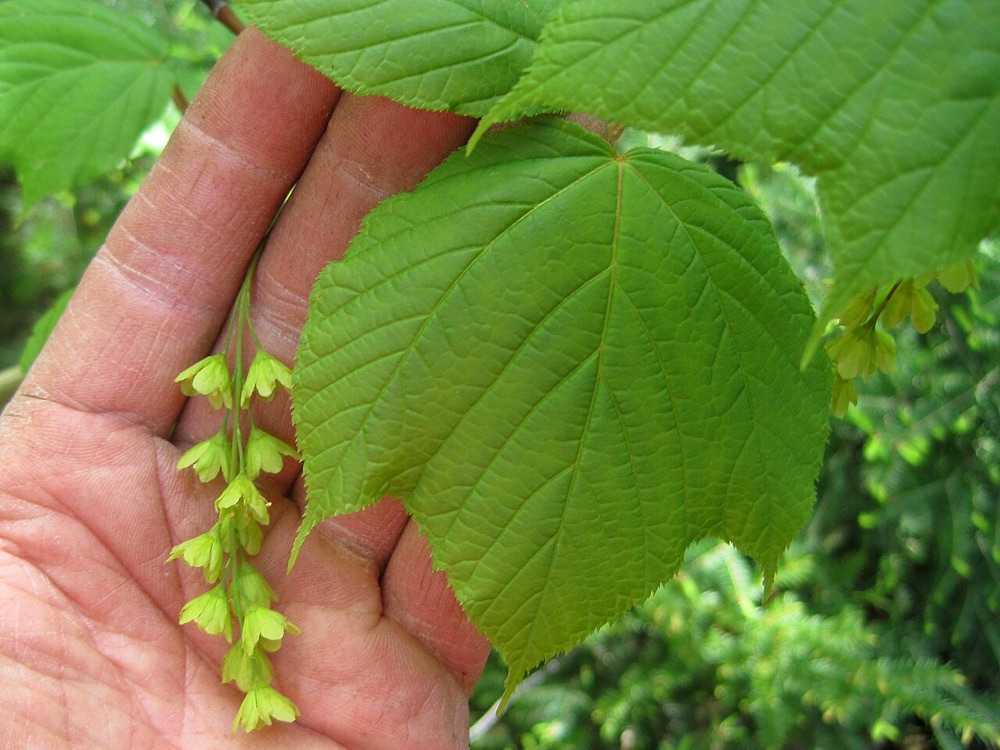

Striped Maple
Acer pensylvanicum
- Also called
- Moosewood
- Kind
- tree · Aceraceae
- Native to Vermont
- yes
- Legal status
- Native, understory tree; no special legal status found (checked 2026-10-30)
- Look-alikes
- Mountain maple; Red maple
Pictures



Names
Striped maple, Acer pensylvanicum. Also called moosewood (search summary of the factsheet).
Range and habitat
Native. A small tree or large shrub up to 30 feet, in the understory. A search summary says it prefers cool, moist, acidic soil.
How to identify (by season; look-alikes and the key difference)
- Bark is the quickest check: young stems are smooth, gray-green with prominent white lengthwise stripes; older bark is reddish brown.
- Leaves: opposite, simple, nearly round in outline, 5 to 8 inches, three-lobed like a goose's foot, with a toothed edge.
- Look-alikes: mountain maple and red maple.
By growth stage (trees: seedling, sapling, pole-size, mature or old; what to look at in each)
| Stage | What to look at | What you see |
|---|---|---|
| Small seedling | leaf tip, teeth | Leaf shape is variable (some have three distinct lobes, some none); the most reliable clues are minute, frequent, sharp teeth and a tapering "drip tip". |
| Larger seedling | leaf shape, twig | Leaves with three broad, shallow lobes like a goose's foot, each lobe ending in a tapering tip; smooth twig tinged red or green. |
| Sapling and pole-size | bark | The white-striped gray-green bark of young stems. |
| Mature and old trees | bark, size | Bark reddish brown; seldom larger than a small tree (up to about 30 feet). |
| Winter, any age | twig, bud | Moderately stout smooth twigs, green changing to red or red-brown; reddish, narrowly egg-shaped, stalked buds. |
| Fruit (late summer to early fall) | seeds | Paired, wide-spreading winged seeds in hanging clusters. |
Through the year
Dates are typical for Vermont and shift with elevation and year; "approximate" means the source gave a season and the dates are a translation of it.
| When | What | Look for | What to do | Dates |
|---|---|---|---|---|
| May 15 to Jun 15 | flower (identify) | Yellow-green, bell-shaped flowers about 1/4 inch long in long hanging slender clusters, male and female on separate trees. | - | approximate |
| Aug 20 to Oct 15 | seed-drop (identify) | Paired, wide-spreading winged seeds 3/4 to 1 inch long in hanging clusters, ripening in late summer and early fall. | - | approximate |
| Nov 1 to Mar 31 | dormant (identify) | Young stems gray-green with white lengthwise stripes; smooth green-to-red twigs; reddish, narrowly egg-shaped, stalked buds. | - | approximate |
Signs on the land (tracks, scat, browse, nests, holes, calls)
Winter browse and bark stripping by moose (Moose).
Role in the forest (what it eats, what eats it, what it needs)
A search summary of the factsheet says it is a browse species passed over by deer for almost anything else, and attracts moose, rabbits and grouse.
What helps it thrive (light, soil, shelter, food and the trees it uses)
- Light: tolerant of deep shade but it develops best under moderate light; in direct sunlight it is succeeded by mountain maple (FEIS).
- Soil and place: moist, acid soils in deep valleys and cool, moist, shaded north-facing slopes; in the Green Mountains of Vermont it is found from 1,830 to 2,830 feet and reaches its best development below 2,430 feet.
- Openings and cutting: it grows well in small forest openings and under thinned overstories, and may occupy openings for more than 100 years; after cutting it frequently becomes the dominant species where regeneration was abundant beforehand.
- Browse: the leaves and shoots are browsed by moose, white-tailed deer and beavers; its usual understory companions are hobblebush, Canada yew and mountain maple.
Managing for it (habitat practices) and living with it (conflicts and damage)
Not recorded here.
Legal status
No special status found.
Sources
- Virginia Tech Dendrology, Striped maple: https://dendro.cnre.vt.edu/dendrology/syllabus/factsheet.cfm?ID=4 (read 2026-10-30)
- J. Robertson and J. Truong, A Guide to the Seedlings of New England (FEMC, 2021): https://www.uvm.edu/femc/attachments/project/999/seedling_guide-compressed_1.pdf
- USDA Forest Service, Fire Effects Information System, Acer pensylvanicum: https://www.fs.usda.gov/database/feis/plants/tree/acepen/all.html (read through a summarizing fetch 2026-11-01)
What this page is based on
Kind of source: mixed (Virginia Tech factsheet; New England seedling guide; the moosewood name and wildlife notes from a search summary of the factsheet)
What was read: Virginia Tech Dendrology factsheet (ID 4) for striped maple, read through a summarizing fetch on 2026-10-30, and the striped maple pages of A Guide to the Seedlings of New England (read as text). The factsheet gives no habitat; the 'moosewood' name and a statement that it is generally passed over by deer come from a search summary of the same factsheet. Calendar windows translate 'late spring', 'late summer and early fall' and 'winter'. Habitat needs (light, soil, regeneration, response to cutting) added 2026-11-01 from the USDA Forest Service Fire Effects Information System species review (summarizing fetch); the review is national in scope and the Northeast details are those it names.
Last checked: 2026-10-30
Vermont land and forest reference, built 2026-11-01. Rules and dates here are summaries, not legal advice; dates shift with elevation and year. Photo and recording credits · Note: _reference/US-VT/Species/Striped Maple.md